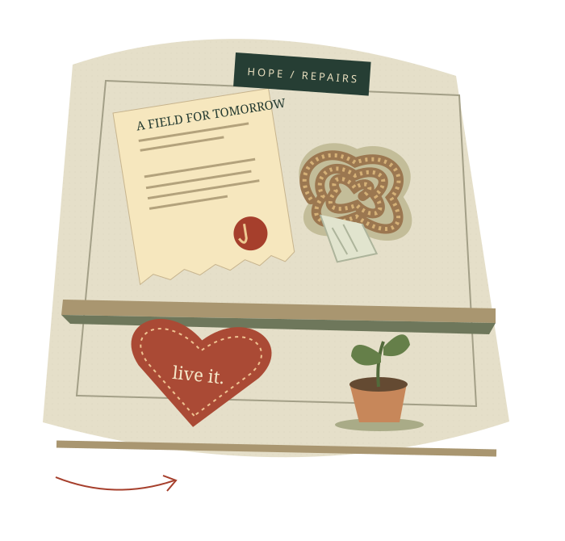

Come, Follow Me / Primary, age 9 / 30 minutes
The Hope
Repair Shop.
What do you keep when
everything seems to be falling apart?
A field nobody can use yet. Some worn-out cloth. A promise carried inside. Come investigate three unexpected objects—and find hope in Jesus Christ.
Open the shopNo supplies, printing, or video needed.

Ordinary objects.Extraordinary hope.
Gather the crew / 3 minutes, including opening prayer
Welcome, hope investigators.
Last week, Jeremiah learned that God knew him before he was born. Today, things get hard for Jeremiah and his people. Does God’s love disappear when life gets hard?
Find something to trust, something to do, and something to carry in your heart.
Open with prayer. Ask: “What did the potter do when the clay lost its shape?” Take one answer: he shaped it again. Explain that Jerusalem was in danger and later was destroyed. People were grieving. God still offered a future, forgiveness, and help. Children are investigators, not broken objects to fix. Read the large text together; the small notes are for you.
Visit in order, or let the class choose the first object. Anyone may pass on speaking.
The deed desk / 6 minutes
The strangest purchase.
Jerusalem is surrounded by an enemy army. Jeremiah is confined in a prison courtyard. Then the Lord tells him to buy a field.
Why buy a field
during a disaster?
Make a prediction before you open the evidence.
This is a real purchase in Jeremiah 32, not a pretend auction. A deed is a document showing who owns land. Jeremiah follows a specific command from the Lord. This story is about God’s promised restoration, not a rule about buying things.
Deed of purchase
- Buyer
- Jeremiah
- Seller
- His cousin Hanameel
- Price
- 17 shekels of silver
- Place
- Anathoth
Illustrated summary of Jeremiah 32:6–15
Clue A The money
Read Jeremiah 32:9–12. Jeremiah pays, signs the deed, and has witnesses. This is a real commitment.
What does his action tell you about his trust?Clue B The container
Read Jeremiah 32:14. Baruch is to put the documents in an earthen vessel—a clay jar—to preserve them.
Why protect a document for a long time?Clue C The promise
Read Jeremiah 32:15. God promises that people will have houses, fields, and vineyards in the land again.
What future does God see that the people cannot see yet?“I can’t do this math yet.” “A friendship can grow again.” Which next step could you take while you ask Jesus for help?
The field picture imagines restoration; it is not a historical image or an instant change in the story. Help children distinguish trusting God from knowing exactly when a problem will end. Accept different thoughtful answers.
The rescue bench / 7 minutes
The cloth nobody noticed.
Jeremiah is lowered into a muddy pit because people do not like his message. Ebed-melech, an Ethiopian man serving in the king’s household, hears what has happened. He decides to speak up.
What would your crew need?
Suggest a plan together. Then look for the details in Jeremiah 38:7–13. Add each part you discover.
Which part would you have thought of first?
The pit is deep. One person does not have to solve this alone.
Why did Ebed-melech put cloth under Jeremiah’s arms before pulling him up?
After the class has a theory…
The cloth cushioned him from the ropes. Ebed-melech cared about getting Jeremiah out and about how Jeremiah felt along the way. Courage can be gentle.
A 30-second rehearsal
A child is being left out.
With a partner, practice a helpful sentence and a next action. One person speaks; the other answers. Switch roles if there’s time.
Try “Come sit with us,” then make room. For bullying or danger, tell a trusted adult. All action stays pretend: mime lowering a rope from your seats; never tie, pull, or lift a child. Ebed-melech’s courage did not mean acting without help.
The heart workshop / 6 minutes
Where does a promise live?
A reminder can hang on a wall. God wants His ways to become part of who we are.
“I will put my law in their inward parts, and write it in their hearts.”Jeremiah 31:33 ↗
Read the quotation together. “Law” means God’s teachings and commandments. “Inward parts” means inside us; this is a picture of learning to love God and willingly follow Him. A covenant is a sacred agreement with God. In baptism we covenant to serve Him and keep His commandments; He promises His Spirit. See Mosiah 18:8–10. Jesus helps us repent and grow. The screen activity is practice, not a new covenant.
Love becomes
action.
Pick a moment. Invent a response.
Think first. Share a possible action before opening the example.
You notice a child sitting alone while everyone else makes groups. What could love look like?
Finish this sentence: “When _____, I can _____ because I want to follow Jesus.”
Invite two different answers. Do not ask children to confess mistakes. They may imagine a situation or think quietly. Children preparing for baptism can practice these ways of following Jesus, too.
The quiet room / 4 minutes
Hope leaves room for tears.
Lamentations is a book of poems about deep sadness after Jerusalem’s destruction. The scriptures made room for those tears.
A hard night is not the whole story.
“They are new every morning: great is thy faithfulness.”Lamentations 3:23 ↗
“They” means the Lord’s mercies—His loving care. Read verses 22–26 together. What continues even when people are sad?
I feel sad.
God still loves me.
Give ten quiet seconds. Ask children to hold one hand open for sadness and the other for God’s love. Bring both hands together. Nobody needs to tell a personal sad story. God’s compassion does not require a cheerful face. Do not imply that a child’s hardship is evidence of wrongdoing or that prayer fixes every problem by tomorrow.
Through Jesus Christ, forgiveness, comfort, resurrection, and lasting joy are possible. We can turn to Him while we wait.
Close the shop / 4 minutes, including closing prayer
Take one small repair into the week.
Look back at the objects. Let three volunteers teach the class one sentence each: What did the field, the cloth, or the heart help you discover about Jesus?
One ordinary moment.
One loving action.
Choose an invitation above, or quietly think of your own. You do not need to share it.
The Hope Repair Shop · Jesus Christ helps us begin again.
Bear a brief, personal testimony of Jesus Christ. Invite children to ask Heavenly Father for help with their chosen action. Close with prayer. Progress stamps celebrate participation; they are not measures of faith or worth.